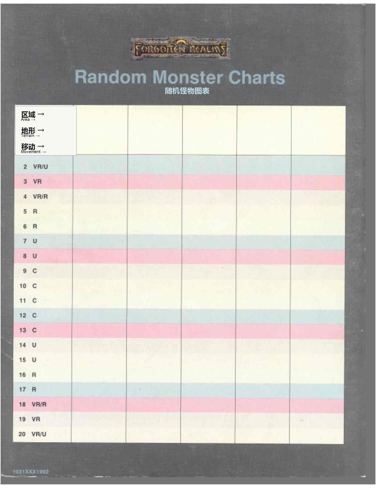

后置索引与随机怪物图表 · Backmatter Index and Random Monster Chart
《国度百科全书》与《国度 DM 资料书》合并索引
第 195–196 页是本套资料的合并索引，涵盖《国度百科全书》和《国度 DM 资料书》。原书以粗体印刷的词条或页码指向《国度 DM 资料书》；粗斜体词条指向新法术。索引中的英文专名与页码必须原样保留，以便与原书、地图及本站的英文检索键对应；本站显示时同时使用已经登记的中文译名。
索引逐项覆盖：Abeir-Toril、冒险公司、Agannazar’s Scorcher、Aglarond、Akadi、Alusair、Alustriel、Anauroch、Arabel、Archendale、Archveult’s Skybolt、Asbravn、Assassins、Aubayreer’s Workbook、Azoun IV、Azuth、Baldur’s Gate、Barbarians、Barroch’s Hold、Battle of the Bones、Battledale、BATTLESYSTEM rules、Beast Cults、Beast Lord、Beregost、Blacktalons、Bladebless、Bloodaxe、Boareskyr Bridge、Body Sympathy、Book of Num、Book of the Silver Talon、Bowgentle’s Book、Bowgentle’s Fleeting Journey、Briel’s Book of Shadows、Calantir’s Way、Calaunt、Calendar、Caligarde’s Claw、Calimshan、Campaigning、Candlekeep、Cavaliers、The Chambeeleon、Chauntea、Chessenta、The Circle、Citadel of the Raven、Clerics、Cloak Wood、Common、Company of the Cloak、Company of the Dragon、Company of the Wolf、Corellon Larethian、Corm Orp、Cormyr、Cult of the Dragon、Currency、Daggerdale、Daggerford、Dalelands、Damara、Darkhold、Death Chariot、Deepingdale、Deneir、Dhaerun、Dethek、Dhedluk、Dwarves、Durlag’s Tower、Easting、Eldath、Elemental Lords、Elminster、Elturel、Elves、Elven Court、Elversult、Encounters、Eveningstar、Evereska、Exploration、Fighters、Fields of the Dead、Firehands Group、Flameshroud、Flaming Fist、Four、Forgotten Forest、Fzoul Chembryl、Gallop、The gate page、Gauntlgrym、Ghorl、Glacier of the White Worm、Glanvyl’s Workbook、Glyphs of Warding、Goblins、Gnomes、Great Shout、Green Rings Trading、Gray Peak、Greycloak Hills、Grey Wall、Grimwald’s Greymantle、Grumbar、Hailcone、Half-elves、Halfaxe Trail、Halfling, Inc.、Halflings、Hammer Hall、Harpers、Harrowdale、Haunted Hall、Helm、Hex grids、High Dale、High Horn、High Moor、Highmoon Trading、Hill of Lost Souls、Hill’s Edge、Hillsfar、Hlintar、Hluthvar、Hobgoblins、Homonculous Creation、Hooknose Crag、Hullack Forest、Hunt、Illykur’s Mantle、Ilmater、Immersea、Impiltur、Iron House、Iron Throne、Istishia、Jhessail Silvertree、Kara-Tur、Khelben Arunsun、Knights of Myth Drannor、Knights of the North、Knights of the Shield、Kobolds、Kossuth、Kulta、Laeral’s Dancing Dweomer、Languages、Lhaeo、Lords’ Alliance、Lords Who Sleep、Loviatar、Lurkan the Reaver、Mane’s Band、Mankind、Maps、Marsember、Mask、Maskyr’s Eye、Melvaunt、Men of the Basilisk、Merald’s Murderous Mist、Mercenary Companies、Merchant Companies、Merchants’ League、Merith Strongbow、Mielikki、Milil、Mintarn、Mistledale、Moonsea、Moonshae Islands、Moradin、Mourngrym、Mulhessen、Mulhorand、Mulmaster、Myrkul、Mystra、Names、The Nathlum、Nchaser’s Eiyromancia、Nchaser’s Glowing Globe、Neverwinter、Night Masks、Nimbral、Nine、NPC level modification table、Nulathoe’s Ninemen、Oghma、Order of the Blue Boar、Orjalun’s Arbatel、Orlumbor、Paladins、Phase Trap、Pheszeltan、Phlan、Piergeiron Paladinson、Pirate Isles、Poisons、Presper’s Moonbow、Priapurl、Procampur、Proskur、Purple Flame、Rashemen、Raurin、Reconstruction、The Red Book of War、Reveal、Ring of Winter、Ruathlek、Ruathym、Sembia、Scardale、Scalamagdrion、Scornubel、Shadow Thieves、Shadowdale、Shairksah、Shar、Sharanalee、Sharantyr、Sheela Peryroyl、Silvanus、Simbul、Six Coffers Market、Skull Gorge、Sossal、Soubar、South、The Spellbook of Daimos、Spendelard’s Chaser、Spell Engine、Stags Caravan、Standing Stone、Stealspell、Storm Silverhand、Sword Coast、Swords of Leilon、Sylune、Talona、Talos、Tarkhaldale、Tasirin’s Haunted Sleep、Tasseldale、Tempus、Terrain and movement、Teshendale、Tethyr、Teziir、Thaalim Torchtower、Thar、The Tome of the Covenant、The Tome of the Unicorn、Torm、Troll Work、Trollclaw Ford、Trueshield Trading、Tsurlagol、Tulbegh、Turmish、Tymora、Tyrluk、Umberlee、Unicorn horns、Unther、Urmlaspyr、Vaasa、Vale of Lost Voices、Vangerdahast、Vilhon Reach、Voonlar、Warrior’s Crypt、Watchware、Waterdeep、Waukeen、Way Inn、Waymoot、Wheloon、Westgate、Wheylon、Windriders Trading、Witches、Wood of Sharp Teeth、Yhaunn、Yiraphon、Yuirwood、Yulash、Zhentarim 和 Zhentil Keep。
词条后面的页码按原书双页索引逐项保留；粗体／粗斜体的版式信息对照整页扫描核查，待索引内容单独裁切、清晰化并汉化后再加入阅读版。
随机怪物图表
原图标题为 Random Monster Charts（随机怪物图表）。表头依次为：Area（区域）、Terrain（地形）、Movement（移动）。表格先留下六个空白列供 DM 填写，再按 d20 给出稀有度栏：

| d20 | 稀有度 |
|---|---|
| 2 | VR/U |
| 3 | VR |
| 4 | VR/R |
| 5–6 | R |
| 7–8 | U |
| 9–13 | C |
| 14–15 | U |
| 16–17 | R |
| 18 | VR/R |
| 19 | VR |
| 20 | VR/U |
原书仅在图表中给出 VR（Very Rare，极罕见）、R（Rare，罕见）、U（Uncommon，不常见）和 C（Common，常见）缩写；VR/U、VR/R 等复合结果按原样保留，具体区域、地形与移动列由 DM 依战役需要填写。